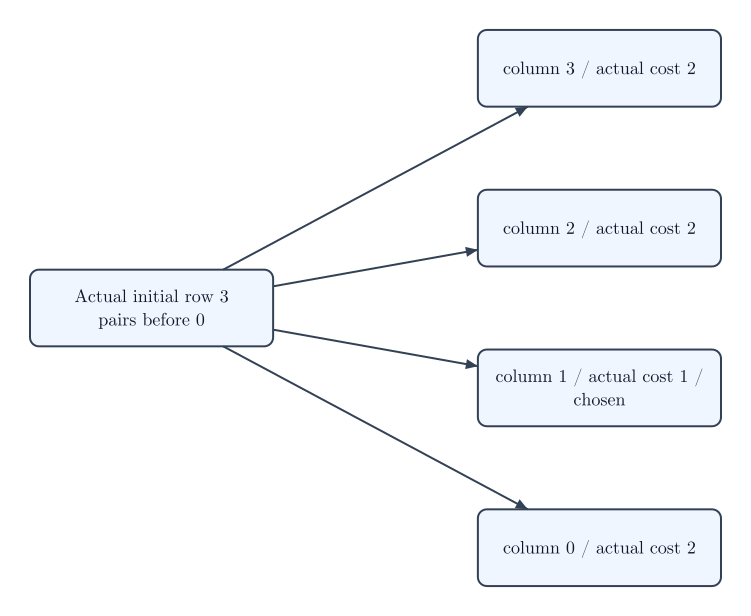
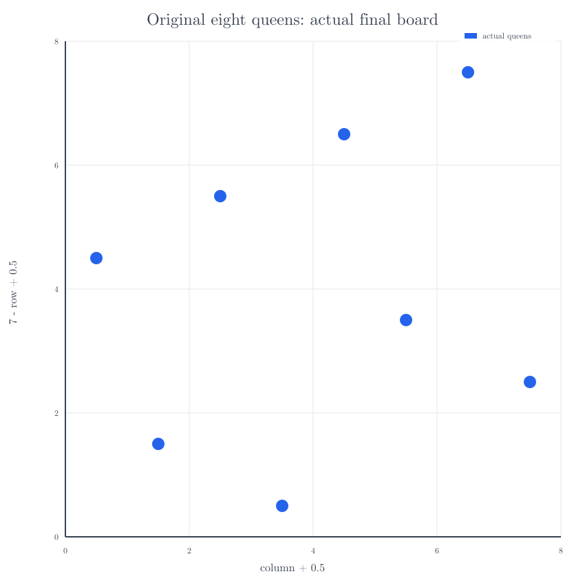
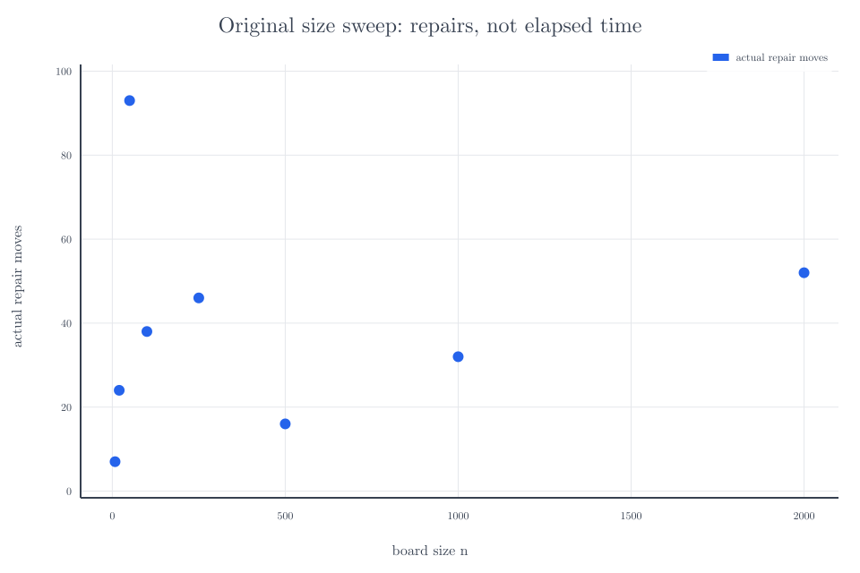
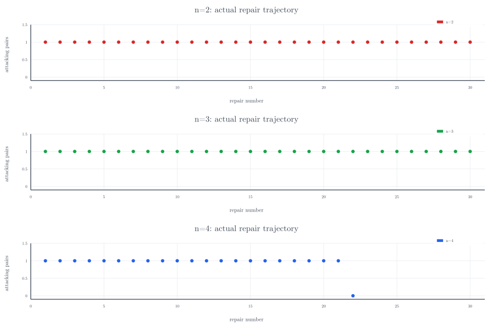

Min-conflicts n-queens
Abstract
Place one queen in each row of a square board so that no two share a column or diagonal. Local repairs can search this constraint space without enumerating all assignments. We inspect real column costs and random tie choices, retain the original eight-queen board and size sweep, and distinguish a verified solution from a capped unsuccessful run. Repair counts alone do not establish runtime independence from board size.
Local costs and a global pair count
With one queen per row, queens attack when their columns match or the absolute column difference equals their row difference. Occupancy arrays count columns and both diagonals. After removing the selected queen, its cost at column c is the sum of these three occupancies. Moving from old cost to a minimum cost changes the total unordered attacking-pair count by the new cost minus the old cost. This count cannot increase on a minimum-cost repair because the original column remains an available candidate.
The algorithm initializes rows greedily at random tied minimum-cost columns. A repair first selects one currently conflicting row, removes that queen, scans every column and randomly chooses a tied minimum. It permits sideways moves and can stagnate; no restart or completeness guarantee is implied. Random choices use an actual MT19937-64 word modulo candidate count, preserving legacy scheduling and its small modulo bias.
Observe one real choice on a four-row board
The next program shows the last greedy initialization decision for four queens and every actual repair. Its first diagram reports the observed row, complete candidate-cost list and actual selected column. These are producer records rather than costs recomputed by report code. The table distinguishes initialization from repair and reports actual attacking-pair counts.
#include <dm/dm.hpp>
int main() {
std::filesystem::create_directories("build");
auto t = dm::algorithms::min_conflicts_nqueens_trace(4, 30, 7);
auto &m = t.moves[3];
dm::graphics::Diagram d;
d.node("row", {0, 3.75},
std::format("Actual initial row {}\npairs before {}", m.row,
m.conflicts_before));
for (std::size_t c = 0; c < m.costs.size(); ++c) {
auto id = std::to_string(c);
d.node(id, {7, double(c) * 2.5},
std::format("column {} / actual cost {}{}", c, m.costs[c],
int(c) == m.column_after ? " / chosen" : "")).edge(
"row", id);
}
std::print("| phase | row | old column | new column | pairs before | pairs after |\n| --- | ---: | ---: " "| ---: | ---: | ---: |\n");
for (auto &r : t.moves)
std::print("| {} | {} | {} | {} | {} | {} |\n",
r.initialization ? "initialize" : "repair", r.row,
r.column_before, r.column_after, r.conflicts_before,
r.conflicts_after);
std::print("\nTerminal solved: {}. Actual repairs: {}.\n", t.result.solved,
t.result.steps);
d.save_svg("build/queens_tiny.svg");
}| phase | row | old column | new column | pairs before | pairs after |
|---|---|---|---|---|---|
| initialize | 0 | -1 | 3 | 0 | 0 |
| initialize | 1 | -1 | 0 | 0 | 0 |
| initialize | 2 | -1 | 2 | 0 | 0 |
| initialize | 3 | -1 | 1 | 0 | 1 |
| repair | 3 | 1 | 1 | 1 | 1 |
| repair | 3 | 1 | 1 | 1 | 1 |
| repair | 3 | 1 | 1 | 1 | 1 |
| repair | 2 | 2 | 3 | 1 | 1 |
| repair | 2 | 3 | 2 | 1 | 1 |
| repair | 2 | 2 | 3 | 1 | 1 |
| repair | 2 | 3 | 3 | 1 | 1 |
| repair | 2 | 3 | 2 | 1 | 1 |
| repair | 3 | 1 | 1 | 1 | 1 |
| repair | 2 | 2 | 3 | 1 | 1 |
| repair | 2 | 3 | 2 | 1 | 1 |
| repair | 3 | 1 | 1 | 1 | 1 |
| repair | 3 | 1 | 1 | 1 | 1 |
| repair | 3 | 1 | 1 | 1 | 1 |
| repair | 3 | 1 | 1 | 1 | 1 |
| repair | 2 | 2 | 2 | 1 | 1 |
| repair | 3 | 1 | 1 | 1 | 1 |
| repair | 3 | 1 | 1 | 1 | 1 |
| repair | 3 | 1 | 1 | 1 | 1 |
| repair | 3 | 1 | 1 | 1 | 1 |
| repair | 2 | 2 | 3 | 1 | 1 |
| repair | 0 | 3 | 2 | 1 | 0 |
Terminal solved: true. Actual repairs: 22.

Retain the original eight-queen board
The original call uses n=8, repair cap1000 and seed42. The table and point plot show the returned assignment with its terminal solved flag. Row0 is drawn at the top; x is column plus one-half and y is7 minus row plus one-half. Equal numeric limits and equal drawing extents preserve square-board geometry. The ordinary function explicitly verifies the final board even when the last permitted repair finds a solution.
#include <dm/dm.hpp>
int main() {
std::filesystem::create_directories("build");
auto r = dm::algorithms::min_conflicts_nqueens(8, 1000, 42);
std::vector<double> x, y;
std::print("Actual solved: {}. Repairs: {}.\n\n| row | actual column |\n| ---: | ---: |\n",
r.solved, r.steps);
for (std::size_t row = 0; row < r.queens.size(); ++row) {
x.push_back(r.queens[row] + .5);
y.push_back(7 - row + .5);
std::print("| {} | {} |\n", row, r.queens[row]);
}
auto p = dm::graphics::RPlot::create();
p.points(x, y, "actual queens", {37, 99, 235}, 9).size(850, 850).margins(
95, 35, 60, 70).x_limits(0, 8).y_limits(0, 8).title(
"Original eight queens: actual final board").x_label("column + 0.5").y_label("7 - row + 0.5").save_svg("build/queens_original.svg");
}Actual solved: true. Repairs: 1.
| row | actual column |
|---|---|
| 0 | 6 |
| 1 | 4 |
| 2 | 2 |
| 3 | 0 |
| 4 | 5 |
| 5 | 7 |
| 6 | 1 |
| 7 | 3 |

Retain the original size sweep
The original sizes are8,20,50,100,250,500,1000,2000, with seed7+n and repair cap50n. Every returned solved flag is printed alongside its repair count. The figure shows repairs, not elapsed time. Initialization scans n columns for each of n rows, costing O(n squared); each repair scans rows and columns, costing O(n). Thus O(n squared+n times cap) work and O(n) driver storage describe this implementation, even if the observed repair counts happen to grow slowly.
#include <dm/dm.hpp>
int main() {
std::filesystem::create_directories("build");
std::vector<double> x, y;
std::print("| board size | seed | cap | actual repairs | verified solved |\n| ---: | ---: | ---: | ---: " "| --- |\n");
for (int n : {8, 20, 50, 100, 250, 500, 1000, 2000}) {
auto r = dm::algorithms::min_conflicts_nqueens(n, 50 * n, 7U + n);
x.push_back(n);
y.push_back(r.steps);
std::print("| {} | {} | {} | {} | {} |\n", n, 7 + n, 50 * n, r.steps,
r.solved);
}
auto p = dm::graphics::RPlot::create();
p.points(x, y, "actual repair moves", {37, 99, 235}, 6).title(
"Original size sweep: repairs, not elapsed time").x_label("board size n").y_label("actual repair moves").save_svg("build/queens_scaling.svg");
}| board size | seed | cap | actual repairs | verified solved |
|---|---|---|---|---|
| 8 | 15 | 400 | 7 | true |
| 20 | 27 | 1000 | 24 | true |
| 50 | 57 | 2500 | 93 | true |
| 100 | 107 | 5000 | 38 | true |
| 250 | 257 | 12500 | 46 | true |
| 500 | 507 | 25000 | 16 | true |
| 1000 | 1007 | 50000 | 32 | true |
| 2000 | 2007 | 100000 | 52 | true |

Plateaus, impossible sizes and capture limits
Two or three queens have no solution under these constraints. A run can exhaust its cap with equal or decreasing attacking-pair counts without reaching zero. The three separate panels below contrast their actual plateaus with four queens under the same cap, preserving identical axis limits so overlapping trajectories remain visible. Even for a solvable size, an unsuccessful capped heuristic run does not prove unsatisfiability. Zero repairs still performs greedy initialization and checks its terminal assignment. Size zero returns a solved empty assignment; negative size or cap throws. The implementation guards occupancy arithmetic before allocation.
A trace owns all decisions and records actual random words, complete costs, tied columns and conflicting rows. Its cap counts three scalar inputs, the final n columns, and each move record plus its stored row IDs, costs and candidate IDs. Default1000000, zero disables. Quota failure throws without returning a partial trace. Capturing total-pair diagnostics adds O(n) work per move, within the ordinary asymptotic bounds; it changes neither RNG scheduling nor choices.
#include <dm/dm.hpp>
int main() {
std::filesystem::create_directories("build");
auto layout = dm::graphics::RLayout::create(3, 1);
std::print("| n | cap | repairs | solved | captured units |\n| ---: | ---: | ---: | --- | ---: |\n");
for (int n : {2, 3, 4}) {
auto t = dm::algorithms::min_conflicts_nqueens_trace(n, 30, 7);
std::vector<double> x, y;
for (auto &m : t.moves)
if (!m.initialization) {
x.push_back(x.size() + 1);
y.push_back(m.conflicts_after);
}
std::print("| {} | 30 | {} | {} | {} |\n", n, t.result.steps,
t.result.solved, t.captured_entries);
auto colour =
n == 2 ? dm::graphics::RGB{220, 38, 38} : n == 3
? dm::graphics::RGB{22, 163, 74}
: dm::graphics::RGB{37, 99, 235};
auto panel = dm::graphics::RPlot::create();
if (!x.empty())
panel.points(x, y, std::format("n={}", n), colour, 5);
panel.title(std::format("n={}: actual repair trajectory", n)).x_limits(0, 31).y_limits(-.1, 1.5).x_label("repair number").y_label("attacking pairs");
layout.add(panel);
}
layout.fit_panels().save_svg("build/queens_controls.svg");
}| n | cap | repairs | solved | captured units |
|---|---|---|---|---|
| 2 | 30 | 30 | false | 225 |
| 3 | 30 | 30 | false | 250 |
| 4 | 30 | 22 | true | 220 |

Conclusion and references
The real candidate costs explain each greedy repair and the nonincreasing pair count. The original board and size sweep retain their exact inputs and honest status flags. These finite runs demonstrate heuristic behavior, while the explicit quadratic initialization rules out a size-independent runtime claim for this implementation.
Minton and colleagues, Minimizing conflicts: a heuristic repair method for constraint satisfaction and scheduling problems (1992) describes the repair approach. The greedy-random initialization, seeded choices and capture contract here describe the native implementation.
Verification
The ten-report batch passes95 CTest cases,31 directly instrumented ASan/UBSan
cases,83 compiled and executed public examples,363/363 scoped documentation
definitions and ten representative hovers. Independent Python integer
arithmetic, MT19937-64/variation replay, graph sets, analytic interpolation,
circle boundary enumeration and actual-sample integration reconstruction agree
on915459 captured records. All six original RMS summaries are separately checked
using96 native MISER estimates and1600000 independently reproduced
plain-comparator points. Frozen valid-input comparisons include the original
seeded solver paths and full MOEA/D fronts. Ten checkout headers and ten
identically installed development headers compile independently, and an
installed-header native consumer links and runs. Each report has four executed
complete programs, four reviewed native figures and both HTML/Markdown exports
with computed-result and image-byte checks. This is a scoped native API audit,
not an installation claim for every language binding. Receipts:
build/mepml-conversion/batch-234-243/.